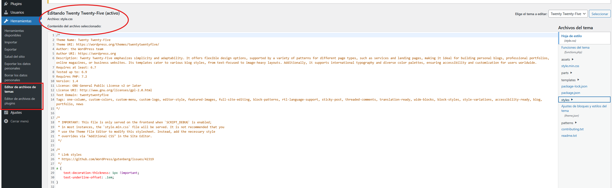

WP - Personalització¶
WordPress disposa de gran varietat de temes i plugins que poden instalar-se, personalitzar i, fins i tot, crear des de zero.
Les possibilitats son molt àmplies, únicament es necessita de temps, gust i unes nocions bàsiques per començar. No cal dir que també hi ha documentació tècnica oficial.
Editar¶
Des de el panell d’administració de WordPress, tenim a l’abast les opcions d’edició, tant del tema actiu com dels plugins instal·lats.

{kind=link}
Estructura d’un tema¶
Anem a explorar l’estructura de carpetes i arxius d’un tema de WordPress basat en blocs.
Carpetes i fitxers¶
Un tema al WordPress té diverses carpetes i fitxers que organitzen la seua estructura i funcionalitat. Les més comunes:
- assets/ → Guarda fonts, imatges, arxius CSS i JavaScript.
- parts/ → Inclou fitxers HTML reutilitzables, com ara la capçalera (
header.html) i el peu de pàgina (footer.html). - patterns/ → Conté fitxers PHP amb components reutilitzables, que faciliten la construcció de pàgines i entrades.
- styles/ → Fitxers JSON que proporcionen variacions d’estil global del lloc.
- templates/ → Fitxers HTML que defineixen l’estructura de les pàgines i les publicacions.
Fitxers requerits i opcionals en un tema de blocs¶
Arxius requerits
Perquè un tema basat en blocs funcione bé, WordPress necessita dos fitxers essencials:
- style.css → El full d’estil principal. Defineix metadades del tema, com ara el nom i la descripció, i també permet afegir estils CSS personalitzats.
- index.html → Es troba dins de la carpeta templates/ i és la plantilla predeterminada utilitzada per WordPress per generar pàgines i publicacions.
Fitxers opcionals
- functions.php → Carregat automàticament per WordPress, s’utilitza per afegir codi PHP personalitzat.
- readme.txt → No s’utilitza directament per WordPress, però es requereix per enviar un tema al directori oficial.
- screenshot.png o screenshot.jpg → Imatge de previsualització del tema. Es recomana una mida de 1200x900 píxels.
- theme.json → Arxiu de configuració global per a estils i ajustaments del tema.
Carpetes estàndard en un tema de blocs¶
WordPress defineix quatre carpetes estàndard per a temes basats en blocs:
- templates/ → Conté fitxers HTML amb l’estructura base de documents.
- styles/ → Fitxers JSON amb variacions d’estil.
- patterns/ → Components reutilitzables compostos per blocs.
- parts/ → Seccions reutilitzables com ara capçaleres, peus de pàgina o barres laterals.
El Full d’Estils Principal (style.css)¶
Cada tema al WordPress ha d’incloure un fitxer style.css, que a més de contenir regles d’estil, inclou un comentari a la capçalera amb metadades del tema.
Creació de la capçalera a style.css
La capçalera del fitxer style.css conté informació important sobre el tema i es defineix de la manera següent:
/*
Theme Name: Tema Personalitzat
Theme URI: https://exemple.com
Author: El teu Nom
Author URI: https://elteulloc.com
Description: Un tema de WordPress personalitzat.
Version: 1.0
License: GNU General Public License v2 or later
License URI: https://www.gnu.org/licenses/gpl-2.0.html
Text Domain: temapersonalitzat
Tags: blog, dos-columnes, accesible
*/
Camps clau a la capçalera
- Theme Name → Nom del tema.
- Theme URI → URL amb més informació sobre el tema.
- Author → Nom del creador del tema.
- Description → Breu descripció del tema.
- Versió → Versió actual.
- Text Domain → Usat per a traduccions.
Creació d’un tema fill¶
Els temes fill permeten estendre o modificar temes existents sense alterar-ne el codi font. Per a crear un tema fill, inclou el camp següent a style.css:
/ Template: nom-del-tema-pare /
Això indica que el tema fill hereta la funcionalitat del tema pare.
Plantilles¶
Les plantilles al WordPress defineixen l’estructura de les pàgines i publicacions.
Què són les plantilles i com maneja WordPress el marcatge final?¶
Les plantilles són fitxers HTML que estructuren el contingut del frontend. WordPress utilitza un sistema de jerarquia per determinar quina plantilla utilitzar en renderitzar una pàgina.
Exemple de plantilla de pàgina a WordPress:
<!-- wp:paragraph -->
<p>Benvingut al meu lloc web!</p>
<!-- /wp:paragraph -->
Sistema de jerarquia de plantilles¶
Quan un usuari visita una pàgina, WordPress segueix un ordre de prioritat per seleccionar la plantilla adequada:
- single.html → Per a una sola publicació.
- page.html → Per a pàgines individuals.
- archive.html → Per a fitxers com categories o autors.
- search.html → Per mostrar resultats de cerca.
- 404.html → Per a pàgines no trobades.
- index.html → Plantilla de seguretat en cas que cap altra estiga disponible.
Diferència entre plantilles i parts de plantilla¶
Les plantilles defineixen l’estructura general d’una pàgina, mentre que les parts de plantilla (ubicades a la carpeta parts/) són seccions reutilitzables dins d’una plantilla, com ara la capçalera o el peu de pàgina.
Configuració Global amb theme.json¶
El fitxer theme.json permet definir ajustaments globals del tema.
Per què és important el fitxer theme.json?¶
Abans, els paràmetres del tema es configuraven des del Personalitzador de WordPress. Hui en dia, theme.json permet configurar colors, tipografies i altres estils de manera programàtica.
Estructura del fitxer theme.json¶
Exemple d’un theme.json bàsic:
{
"version": 2,
"settings": {
"color": {
"palette": [
{ "name": "Rojo", "slug": "rojo", "color": "#ff0000" },
{ "name": "Azul", "slug": "azul", "color": "#0000ff" }
]
},
"typography": {
"fontSizes": [
{ "name": "Pequeño", "slug": "pequeno", "size": "12px" }
]
}
}
}
Jerarquia de càrrega de configuracions¶
Les configuracions d’estil segueixen aquesta jerarquia:
- WordPress (wp-includes/theme.json) → Estils predeterminats.
- theme.json del tema pare → Anul·la els valors predeterminats.
- theme.json del tema fill → Anul·la els valors del tema pare.
- Configuració de l’usuari a l’editor del lloc → Anul·len totes les anteriors.
Plugin Create Block Theme¶
El plugin Create Block Theme facilita la creació i modificació de temes a WordPress.
Funcionalitats principals¶
- Exportar un tema com a fitxer .zip.
- Crear un tema fill basat en un altre.
- Clonar un tema existent.
- Sobreescriure un tema actual.
- Crear un tema en blanc des de zero.
- Gestionar fonts de tipografia.
Guardar canvis als fitxers del tema¶
Aquest plugin permet desar modificacions directament als fitxers del tema en lloc d’emmagatzemar-les a la base de dades.